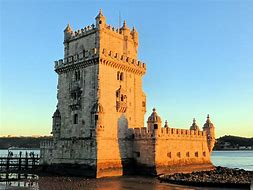

WELCOME

the Tower of Saint Vincent (Portuguese: Torre de São Vicente) is a 16th-century fortification
located in Lisbon that served as a point of embarkation and disembarkation for Portuguese explorers.
The Jerónimos Monastery or Hieronymites Monastery is a former
monastery of the Order of Saint Jerome near the Tagus river in the parish of Belém, in the Lisbon Municipality.
São Jorge Castle , sometimes known in English as Saint George's Castle,
is a historic castle in the Portuguese capital of Lisbon.